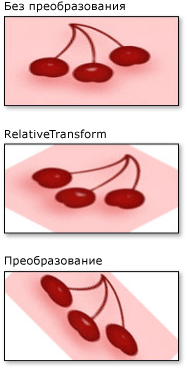

Общие сведения о преобразованиях объекта Brush
Класс Brush предоставляет два свойства для преобразований: Transform и RelativeTransform. Эти свойства позволяют выполнять поворот, масштабирование, наклон и преобразовывать содержимое кисти. В этом разделе описываются различия между этими двумя свойствами и приводятся примеры их использования.
Предварительные требования
Чтобы разобраться в этом разделе, пользователь должен понимать возможности преобразуемой кисти. Для LinearGradientBrush и RadialGradientBrush, см. в разделе закраске сплошным цветом и градиентом Обзор. Для ImageBrush, DrawingBrush, или VisualBrush, см. в разделе Рисование с помощью изображений, рисунков и визуальных элементов. Также необходимо иметь представление о двумерных преобразованиях, описанных в разделе Общие сведения о преобразованиях.
Различия между свойствами Transform и RelativeTransform
При применении преобразования к кисти Transform свойство, необходимо знать размер закрашиваемой области, если вы хотите преобразовать содержимое кисти относительно ее центра. Предположим, что область рисования имеет ширину 200 аппаратно-независимых пикселей и высоту 150 пикселей. Если вы использовали RotateTransform Чтобы повернуть кисть выходных данных на 45 градусов относительно ее центра, то RotateTransform CenterX 100 и CenterY числа 75.
При применении преобразования к кисти RelativeTransform свойство, это преобразование применяется к кисти перед сопоставлением ее выходного значения закрашиваемой области. Следующий список описывает порядок обработки и преобразования содержимого кисти.
Обработка содержимого кисти. Для GradientBrush, это означает определение области градиента. Для TileBrush, Viewbox сопоставляется Viewport. Это становится результатом работы кисти.
Проекция результата работы кисти на прямоугольник преобразования 1 x 1.
Применение кисти RelativeTransform, если он имеется.
Проекция преобразованного результата работы на закрашиваемую область.
Применение кисти Transform, если он имеется.
Так как RelativeTransform применяется при сопоставлении кисти результата прямоугольнику 1 x 1, центра преобразования и значения смещения считаются относительными. Например, если вы использовали RotateTransform Чтобы повернуть кисть выходных данных на 45 градусов относительно ее центра, то RotateTransform CenterX 0,5 и CenterY 0,5.
На следующем рисунке показан результат выполнения нескольких кистей, повернутых на 45 градусов с помощью RelativeTransform и Transform свойства.
Использование RelativeTransform с TileBrush
Так как мозаичные кисти являются более сложные, чем другие, применение RelativeTransform одно может привести к непредвиденным результатам. Например, рассмотрим следующий рисунок.
В следующем примере используется ImageBrush для закраски прямоугольной области приведенным выше изображением. Он применяется RotateTransform для ImageBrush объекта RelativeTransform свойство, которое задает его Stretch свойства UniformToFill, которого необходимо сохранять пропорции изображения при его растяжении для полного заполнения прямоугольника.
<Rectangle Width="200" Height="100" Stroke="Black" StrokeThickness="1">
<Rectangle.Fill>
<ImageBrush Stretch="UniformToFill">
<ImageBrush.ImageSource>
<BitmapImage UriSource="sampleImages\square.jpg" />
</ImageBrush.ImageSource>
<ImageBrush.RelativeTransform>
<RotateTransform CenterX="0.5" CenterY="0.5" Angle="90" />
</ImageBrush.RelativeTransform>
</ImageBrush>
</Rectangle.Fill>
</Rectangle>
В этом примере выводятся следующие данные:
Обратите внимание на то, что изображение искажено, даже если кисти Stretch было присвоено UniformToFill. Это потому, что относительное преобразование применяется после кисти Viewbox сопоставляется с его Viewport. В следующем списке описан каждый шаг процесса:
Проект содержимого кисти (Viewbox) на базовую плитку (Viewport) с помощью кисти Stretch параметр.
Проекция базового мозаичного элемента на прямоугольник преобразования 1 x 1.

Применить RotateTransform.
Проекция преобразованного базового мозаичного элемента на закрашиваемую область.
Пример Поворот ImageBrush на 45 градусов
В следующем примере применяется RotateTransform для RelativeTransform свойство ImageBrush. RotateTransform Объекта CenterX и CenterY заданы оба свойства 0,5, относительные координаты центра содержимого точка. В результате содержимое кисти поворачивается относительно ее центра.
//
// Create an ImageBrush with a relative transform and
// use it to paint a rectangle.
//
ImageBrush relativeTransformImageBrush = new ImageBrush();
relativeTransformImageBrush.ImageSource =
new BitmapImage(new Uri(@"sampleImages\pinkcherries.jpg", UriKind.Relative));
// Create a 45 rotate transform about the brush's center
// and apply it to the brush's RelativeTransform property.
RotateTransform aRotateTransform = new RotateTransform();
aRotateTransform.CenterX = 0.5;
aRotateTransform.CenterY = 0.5;
aRotateTransform.Angle = 45;
relativeTransformImageBrush.RelativeTransform = aRotateTransform;
// Use the brush to paint a rectangle.
Rectangle relativeTransformImageBrushRectangle = new Rectangle();
relativeTransformImageBrushRectangle.Width = 175;
relativeTransformImageBrushRectangle.Height = 90;
relativeTransformImageBrushRectangle.Stroke = Brushes.Black;
relativeTransformImageBrushRectangle.Fill = relativeTransformImageBrush;
<Rectangle Width="175" Height="90" Stroke="Black">
<Rectangle.Fill>
<ImageBrush ImageSource="sampleImages\pinkcherries.jpg">
<ImageBrush.RelativeTransform>
<RotateTransform CenterX="0.5" CenterY="0.5" Angle="45" />
</ImageBrush.RelativeTransform>
</ImageBrush>
</Rectangle.Fill>
</Rectangle>
В следующем примере также применяется RotateTransform для ImageBrush, но использует Transform вместо свойства RelativeTransform свойство. Чтобы повернуть кисть относительно ее центра, RotateTransform объекта CenterX и CenterY должны быть указаны в абсолютных координатах. Так как прямоугольник, закрашиваемый с помощью кисти, имеет размеры 175 на 90 пикселей, его центральная точка будет иметь координаты (87,5, 45).
//
// Create an ImageBrush with a transform and
// use it to paint a rectangle.
//
ImageBrush transformImageBrush = new ImageBrush();
transformImageBrush.ImageSource =
new BitmapImage(new Uri(@"sampleImages\pinkcherries.jpg", UriKind.Relative));
// Create a 45 rotate transform about the brush's center
// and apply it to the brush's Transform property.
RotateTransform anotherRotateTransform = new RotateTransform();
anotherRotateTransform.CenterX = 87.5;
anotherRotateTransform.CenterY = 45;
anotherRotateTransform.Angle = 45;
transformImageBrush.Transform = anotherRotateTransform;
// Use the brush to paint a rectangle.
Rectangle transformImageBrushRectangle = new Rectangle();
transformImageBrushRectangle.Width = 175;
transformImageBrushRectangle.Height = 90;
transformImageBrushRectangle.Stroke = Brushes.Black;
transformImageBrushRectangle.Fill = transformImageBrush;
<Rectangle Width="175" Height="90" Stroke="Black">
<Rectangle.Fill>
<ImageBrush ImageSource="sampleImages\pinkcherries.jpg">
<ImageBrush.Transform>
<RotateTransform CenterX="87.5" CenterY="45" Angle="45" />
</ImageBrush.Transform>
</ImageBrush>
</Rectangle.Fill>
</Rectangle>
На следующем рисунке показана кисть без преобразования, с преобразованием, примененным к RelativeTransform свойство и с преобразованием, примененным к Transform свойство.

Данный пример является частью большого примера. Полный пример см. в разделе Пример использования кистей. Более подробные сведения о кистях см. в разделе Общие сведения о кистях WPF.